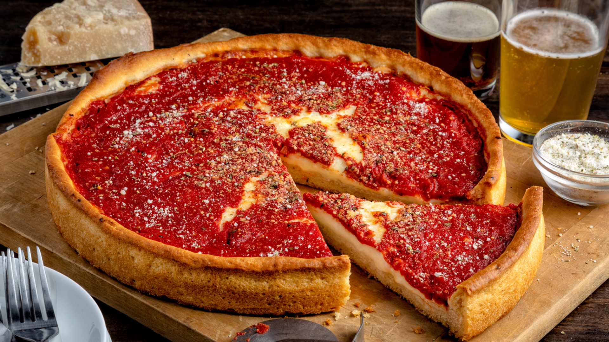

Chicago Deep-Dish Pizza

Description
I have it on good authority that this is the deep-dish pizza dough
that's used in Chicago. The real thing is nothing like bread or even pizza dough.
It's a buttery, flaky crust that's achieved by using corn oil (not butter)
and minimal mixing and kneading times. The pizza itself is built with cheese,
toppings, and sauce, in that order. Contrary to popular opinion, Chicago pizzerias
do not use cornmeal in the dough.
Ingredients
- 2 ¼ teaspoons active dry yeast
- 1 ½ teaspoons white sugar
- 1 ⅛ cups warm water - 110 to 115 degrees F (43 to 45 degrees C)
- 3 cups all-purpose flour
- ½ cup corn oil
- 1 ½ teaspoons kosher salt
- butter as needed, for greasing
Steps
- Dissolve yeast and sugar in warm water in a bowl. Let stand until yeast softens
and begins to form a creamy foam, 5 to 10 minutes.
- Combine yeast mixture, flour, corn oil, and kosher salt in a large stand mixer
fitted with the dough hook; knead until dough holds together but is still slightly
sticky, about 2 minutes.
- Form dough into a ball and transfer to a buttered bowl. Turn to coat dough with
butter, then cover the bowl with a towel and let rise in a warm place until
doubled in volume, about 6 hours.
- Punch down dough and let rest for 10 to 15 minutes. Press dough into a 10-inch
deep-dish pizza pan and follow your pizza recipe.